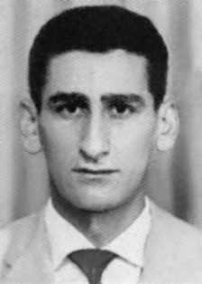

Helber
José
Gomes
Goulart
CIRCUNSTÂNCIAS DA MORTE
Helber José Gomes Goulart morreu em São Paulo, no dia 16 de julho de 1973, em circunstâncias ainda não totalmente esclarecidas. De acordo com a versão oficial dos fatos apresentada pelos órgãos de repressão, Helber teria morrido durante uma troca de tiros com agentes de segurança do Estado, nas proximidades do Museu do Ipiranga, em São Paulo.
Integrantes do DOI-CODI/SP, então comandado pelo major Carlos Alberto Brilhante Ustra, estariam fazendo uma ronda em locais que poderiam ser usados como “cobertura de pontos” por militantes, quando perceberam a presença de uma pessoa que estaria em “atitude suspeita”. Ao notar a aproximação dos agentes, Helber José teria sacado um revólver e atirado na direção dos agentes do DOI-CODI. A partir daí, de acordo com a versão oficial, teria se iniciado o confronto que resultou na morte de Helber José.
A família só soube da execução dois dias depois, em 18 de julho, pela televisão. As investigações realizadas pela Comissão de Familiares de Mortos e Desaparecidos Políticos e, mais recentemente, pela Comissão Nacional da Verdade revelaram a existência de indícios de que os órgãos de repressão divulgaram uma versão falsa para a morte de Helber. De acordo com testemunhos, Helber foi visto no DOI-CODI por presos políticos dias antes de sua morte.
Com a saúde fragilizada em função das torturas a que fora submetido, conforme contido em testemunhos de presos políticos, foi levado para ser atendido no Hospital Geral do Exército, localizado no bairro do Cambuci, nas proximidades do Museu do Ipiranga, local do suposto confronto, segundo a versão oficial. É provável que a prisão de Helber tenha decorrido da atuação do médico João Henrique Ferreira de Carvalho, conhecido como Jota, um agente policial infiltrado na Ação Libertadora Nacional (ALN).
Jota chegou a ser mencionado como modelo de infiltração pela antiga Escola Nacional de Informações (Esni). O atestado de óbito de Helber José Gomes Goulart, assinado pelos legistas Harry Shibata e Orlando J. B. Brandão, registra que a morte ocorreu às 16h de 16 de julho de 1973. Embora a requisição de exame necroscópico ao Instituto Médico-Legal (IML) também registre que ele teria morrido às 16h, o verso do documento indica que o corpo deu entrada no necrotério às 8h do mesmo dia. Portanto, o corpo teria chegado ao IML oito horas antes do horário registrado como horário da morte, e três horas e 30 minutos antes de supostamente ter sido abordado por agentes do DOI-CODI nas proximidades do Museu do Ipiranga.
Segundo Nilmário Miranda, relator do caso junto à Comissão Especial sobre Mortos e Desaparecidos (CEMDP), Helber já teria morrido antes das 8 horas da manhã, quando seu corpo deu entrada no necrotério. De acordo com o laudo necroscópico, o corpo de Helber apresentava equimoses e a causa da morte teria sido “choque hemorrágico oriundo de ferimento transfixiante do pulmão no seu lobo inferior”. Consideradas as características do ferimento descrito no laudo, o relator chamou atenção para o fato do disparo que causou morte de Helber ter sido feito de cima para baixo, característica de disparo efetuado contra corpo caído ao chão.
Na foto do corpo, em que Helber aparece sem barba, são visíveis marcas de ferimentos na altura do pescoço que não são mencionadas no laudo. Helber José Gomes Goulart foi enterrado como indigente, no cemitério Dom Bosco, em Perus, na cidade de São Paulo. Em 1992, seus restos mortais foram exumados e identificados pela equipe do Departamento de Medicina Legal da Universidade Estadual de Campinas e trasladados para Mariana (MG).
Após missa celebrada por dom Luciano Medes de Almeida, presidente da CNBB, o sepultamento foi realizado no cemitério de Santana. Em 13 de julho de 1992, foi celebrada uma missa na Catedral da Sé por dom Paulo Evaristo Arns. Além de Helber, foram homenageados na missa Frederico Eduardo Mayr e Emanuel Bezerra dos Santos, cujos restos mortais também haviam sido identificados.
Helber José Gomes Goulart died in São Paulo, on July 16, 1973, under circumstances that have not yet been fully explained. According to the official version of events presented by law enforcement agencies, Helber died during an exchange of gunfire with state security agents, near the Ipiranga Museum, in São Paulo.
Members of DOI-CODI/SP, then commanded by Major Carlos Alberto Brilhante Ustra, were carrying out a patrol in places that could be used as “coverage points” by militants, when they noticed the presence of a person who was in a “suspicious attitude”. Upon noticing the approach of the agents, Helber José allegedly took out a revolver and shot in the direction of the DOI-CODI agents. From then on, according to the official version, the confrontation that resulted in the death of Helber José began.
The family only found out about the execution two days later, on July 18, on television. Investigations carried out by the Commission of Relatives of Political Dead and Disappeared and, more recently, by the National Truth Commission revealed the existence of evidence that the repression bodies published a false version of Helber's death. According to testimonies, Helber was seen at DOI-CODI by political prisoners days before his death.
With his health weakened due to the torture he was subjected to, as contained in testimonies from political prisoners, he was taken to be treated at the Army General Hospital, located in the Cambuci neighborhood, close to the Ipiranga Museum, site of the alleged confrontation, according to the official version. It is likely that Helber's arrest resulted from the actions of the doctor João Henrique Ferreira de Carvalho, known as Jota, a police agent infiltrated in the National Liberation Action (ALN).
Jota was even mentioned as a model of infiltration by the former National Information School (Esni). Helber José Gomes Goulart's death certificate, signed by coroners Harry Shibata and Orlando J. B. Brandão, records that his death occurred at 4 pm on July 16, 1973. Although the request for a necroscopic examination to the Legal Medical Institute (IML) also records that he died at 4 pm, the back of the document indicates that the body was admitted to the morgue at 8 am on the same day. Therefore, the body would have arrived at the IML eight hours before the time recorded as the time of death, and three hours and 30 minutes before it was allegedly approached by DOI-CODI agents near the Ipiranga Museum.
According to Nilmário Miranda, rapporteur of the case with the Special Commission on the Dead and Missing (CEMDP), Helber had already died before 8 am, when his body was admitted to the morgue. According to the autopsy report, Helber's body showed bruises and the cause of death was “hemorrhagic shock resulting from a transfixing wound in the lung in his lower lobe”. Considering the characteristics of the wound described in the report, the rapporteur drew attention to the fact that the shot that caused Helber's death was fired from above, characteristic of a shot fired at a body lying on the ground.
In the photo of the body, in which Helber appears without a beard, marks of injuries are visible on the neck that are not mentioned in the report. Helber José Gomes Goulart was buried as a pauper, in the Dom Bosco cemetery, in Perus, in the city of São Paulo. In 1992, his remains were exhumed and identified by the team from the Department of Legal Medicine at the State University of Campinas and transferred to Mariana (MG).
After a mass celebrated by Dom Luciano Medes de Almeida, president of the CNBB, the burial took place in the Santana cemetery. On July 13, 1992, a mass was celebrated at the Sé Cathedral by Dom Paulo Evaristo Arns. In addition to Helber, Frederico Eduardo Mayr and Emanuel Bezerra dos Santos, whose remains had also been identified, were honored at the mass.
Helber José Gomes Goulart murió en São Paulo, el 16 de julio de 1973, en circunstancias que aún no han sido completamente explicadas. Según la versión oficial de los hechos presentada por las fuerzas del orden, Helber murió durante un intercambio de disparos con agentes de la seguridad del Estado, cerca del Museo de Ipiranga, en São Paulo.
Integrantes del DOI-CODI/SP, entonces comandados por el mayor Carlos Alberto Brilhante Ustra, realizaban un patrullaje en lugares que podrían ser utilizados como “puntos de cobertura” por los militantes, cuando notaron la presencia de una persona que se encontraba en “actitud sospechosa”. Al percatarse del acercamiento de los agentes, Helber José presuntamente sacó un revólver y disparó en dirección a los agentes del DOI-CODI. A partir de entonces, según la versión oficial, comenzó el enfrentamiento que derivó en la muerte de Helber José.
La familia no se enteró de la ejecución hasta dos días después, el 18 de julio, por televisión. Investigaciones realizadas por la Comisión de Familiares de Muertos y Desaparecidos Políticos y, más recientemente, por la Comisión Nacional de la Verdad revelaron la existencia de evidencias de que los órganos de represión publicaron una versión falsa sobre la muerte de Helber. Según testimonios, Helber fue visto en el DOI-CODI por presos políticos días antes de su muerte.
Con su salud debilitada por las torturas a las que fue sometido, según consta en testimonios de presos políticos, fue trasladado para ser atendido en el Hospital General del Ejército, ubicado en el barrio de Cambuci, cercano al Museo de Ipiranga, lugar del presunto enfrentamiento, según la versión oficial. Es probable que la detención de Helber se deba a la actuación del médico João Henrique Ferreira de Carvalho, conocido como Jota, policía infiltrado en la Acción de Liberación Nacional (ALN).
Jota incluso fue mencionado como modelo de infiltración por la ex Escuela Nacional de Información (Esni). El certificado de defunción de Helber José Gomes Goulart, firmado por los forenses Harry Shibata y Orlando J. B. Brandão, registra que su muerte ocurrió a las 4 de la tarde del 16 de julio de 1973. Aunque la solicitud de examen necroscópico al Instituto Médico Legal (IML) también registra que falleció a las 4 de la tarde, el reverso del documento indica que el cuerpo fue ingresado en la morgue a las 8 de la mañana del mismo día. Por lo tanto, el cuerpo habría llegado al IML ocho horas antes de la hora registrada como hora de muerte, y tres horas y 30 minutos antes de que fuera presuntamente abordado por agentes del DOI-CODI en las inmediaciones del Museo de Ipiranga.
Según Nilmário Miranda, relator del caso ante la Comisión Especial de Muertos y Desaparecidos (CEMDP), Helber ya había fallecido antes de las 8 de la mañana, cuando su cuerpo fue ingresado en la morgue. Según el informe de la autopsia, el cuerpo de Helber presentaba hematomas y la causa de la muerte fue “shock hemorrágico resultante de una herida transfixiante en el pulmón en el lóbulo inferior”. Teniendo en cuenta las características de la herida descrita en el informe, el ponente llamó la atención sobre el hecho de que el disparo que provocó la muerte de Helber fue realizado desde arriba, característica de un disparo dirigido a un cuerpo tendido en el suelo.
En la foto del cuerpo, en la que Helber aparece sin barba, se ven marcas de heridas en el cuello que no se mencionan en el informe. Helber José Gomes Goulart fue enterrado como indigente, en el cementerio Dom Bosco, en Perus, en la ciudad de São Paulo. En 1992, sus restos fueron exhumados e identificados por el equipo del Departamento de Medicina Legal de la Universidad Estadual de Campinas y trasladados a Mariana (MG).
Después de una misa celebrada por don Luciano Medes de Almeida, presidente de la CNBB, se realizó el entierro en el cementerio de Santana. El 13 de julio de 1992 se celebró una misa en la Catedral de la Sé por Dom Paulo Evaristo Arns. Además de Helber, en la misa fueron homenajeados Frederico Eduardo Mayr y Emanuel Bezerra dos Santos, cuyos restos también fueron identificados.